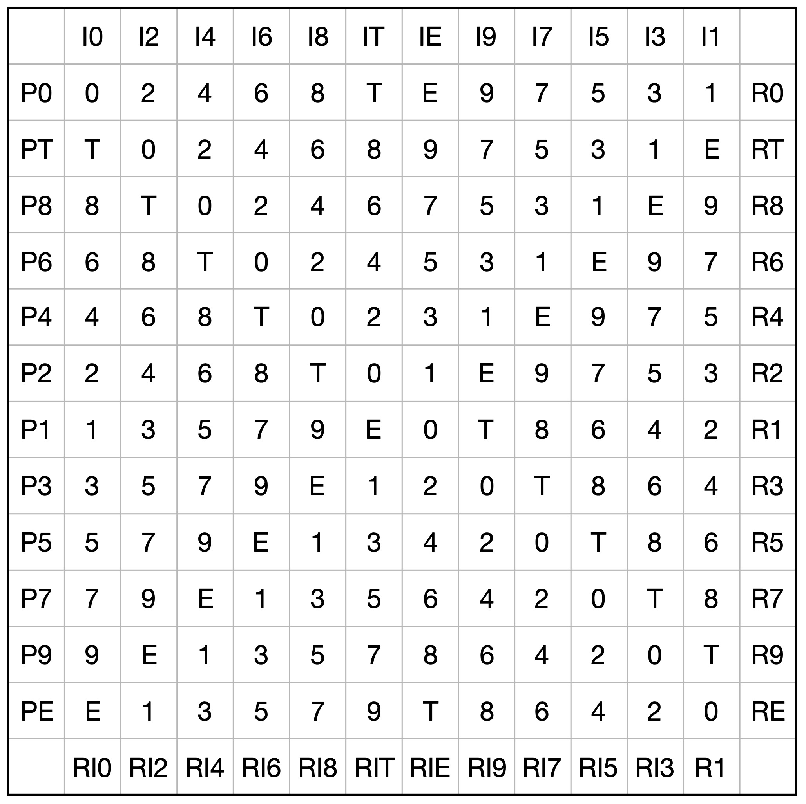
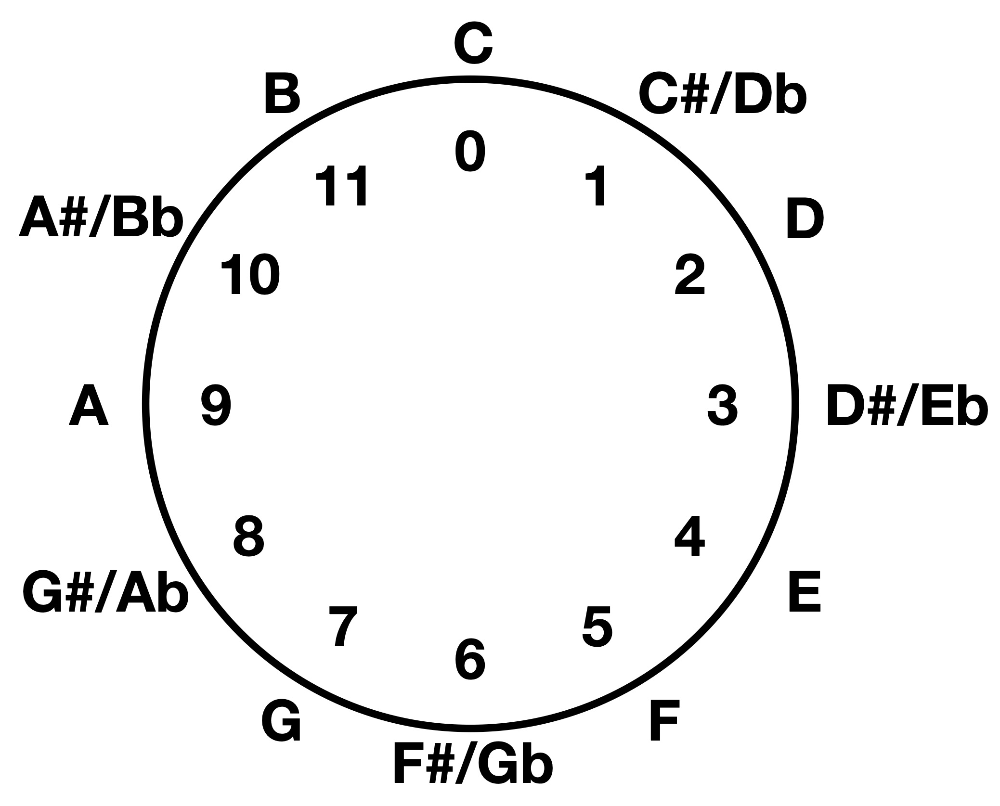

Recreating a tool I used in the music theory classroom with Python.
Python
Music
Author
Joe Sferra
Published
November 7, 2024

Meeting the Matrix
The twelve-tone matrix is a tool that most college music students have run into at least once in their lives during a music theory course. For a lot of them, it becomes the bane of their existence, as it relies on an understanding of math that they haven’t used much. To add insult to injury, matrices are used for atonal music, the kind of music that isn’t always pleasant to listen to! I thought that by coding a matrix generator out in Python, I could atone for subjecting former students to this technique and learn a little something myself.
To understand the matrix, we have to understand a little bit about music in the early twentieth century. At that time, musicians were reaching out to find new musical techniques to express themselves and their feelings about the world around them. Many felt adrift in the wake of conflicts like World War I, and to mirror that “adrift-ness” in their music, they abandoned the idea of tonality, or a central pitch that feels like “home” or the point of arrival in a piece of music. One technique they used to replace tonality (or to achieve “atonality”) was to use a “tone row”, a sequence of all 12 pitches in the chromatic scale, as their new “home”. The tone row gave them the opportunity to make music with wild new sounds and harmonies, but also some kind of “home” (even if it’s a whole lot harder to hear!). This row could be the basis for melodies, harmonies, and all the pitch decisions in a style of music that we call dodecaphonic, or 12-tone music.
Ruth Crawford Seeger’s String Quartet 1931 is a beautiful piece based on tone rows!
Pitch Class Space
This isn’t the place where we can learn all of the theory that we need to know to approach this, but I will try to hit a couple of the big concepts so that you can dip your toes in. Dodecaphonic music relies on two types of equivalence:
Octave Equivalence
An F# on a keyboard is an F# everywhere. Two notes that have the same note name, but in different octaves, are effectively the same.
Enharmonic Equivalence
An F# is the same as a Gb. Two notes that would be on the same spot on the keyboard, but are spelled differently, are effectively the same.
Taking these two assumptions together, atonal music now exists in pitch class space, a theoretical space like a clock’s face. If you go above or below the range of 0 to 11, it flips back around into that range. If you go two past 11, you get 1. If you start moving below zero, say to -5, it flips back around to being 7.

So before we start building our matrix, we need to express pitches with numbers in pitch-class space. Think about this as the ground rules for our calculator. Here’s a function in Python:
def modconvert(num):if num >=0and num <12:return numelse:return num %12for num inrange(-6, 0):print(f"{num} modconverts to {modconvert(num)}")for num inrange(12, 19):print(f"{num} modconverts to {modconvert(num)}")
-6 modconverts to 6
-5 modconverts to 7
-4 modconverts to 8
-3 modconverts to 9
-2 modconverts to 10
-1 modconverts to 11
12 modconverts to 0
13 modconverts to 1
14 modconverts to 2
15 modconverts to 3
16 modconverts to 4
17 modconverts to 5
18 modconverts to 6
Ok, so now we’re in pitch class space! We’re going to slap this conversion function on basically all the operations we do in the rest of the generator.
Row Forms
So you may be thinking to yourself:
“WHOA this music only uses one sequence of pitches the whole time? Wouldn’t that get boring?”
The answer is YES. That’s why the twelve-tone matrix exists. It’s a way to give one row a bunch of transformations to use as the basis of the composition. These transformations imitate techniques from earlier classical music: transposition, inversion, and retrograde.
Prime forms represent the original row, but transposed. The difference between the index numbers represents their difference in half steps. In the matrix, read left to right.
Inversion forms represent the original row, but inverted. If you measure the intervals of a prime row in pitch class space and then mirror them (go left from the first number instead of right), you get the inversion forms. Read top to bottom.
Retrograde is prime read in reverse. Notice the numbering convention. Read right to left.
Retrograde Inversion is the retrograde reading of the inversion. Read bottom to top. Note: not the inversion of the retrograde!
Expressing Row Forms in Python
My experience so far with learning data structures and algorithms is that you’re always trying to solve problems with the fewest number of calculations that you can possibly use. Don’t be inefficient. I really hope we don’t have to do all 48 calculations for this thing! And in fact we don’t! We’re going to do 12 transpositions of the original row and have them printed out to represent the whole matrix.
This means we have to take a few steps in Python now. Let’s say that we’re going to take in a list of twelve integers as the prime row, numbered 0-11. We’re going to need to transpose this row and measure by how far we have to transpose it.
Let’s do the first part, transposing a row.
# Takes in a row and transposes every pitch class # By the same interval (opci- hours forward on the clock).# Prints how it should look in the matrixdef transpose_print (row, opci): transposed = [modconvert(x + opci) for x in row] newrow =f'P{transposed[0]}{transposed} R{transposed[0]}'# Naming convention to tighten matrix's looks upprint(newrow.replace('10', 'T').replace('11', 'E'))myrow = [2, 11, 6, 5, 4, 3, 0, 8, 9, 7, 1, 10]transpose_print(myrow, 3)
P5 [5, 2, 9, 8, 7, 6, 3, E, 0, T, 4, 1] R5
Ok, so this looks like most of the lines of our matrix, so we’re getting close! We can express the matrix as a series of transpositions of the prime row. Now we need to measure by how far we have to transpose. I’m going to make a list called “Torder” or transposition order. It will be twelve numbers long, representing all the transpositions we’ll need to do, and they will represent inversions of the intervals in the original row.
Before you look at the “Torder” function below, try to imagine what Torder will look like for myrow.
myrow = [2, 11, 6, 5, 4, 3, 0, 8, 9, 7, 1, 10]def make_torder(row):# Creates the list of intervals by which # You need to transpose and print the prime row# First el is always 0 Torder = [0]# Append inversion of distance between each element and first elementfor x inrange(1,12): i = modconvert(row[0] - row[x]) Torder.append(i)return Tordery = make_torder(myrow)print(y)
[0, 3, 8, 9, 10, 11, 2, 6, 5, 7, 1, 4]
Figuring out this order is a bit tougher, so don’t worry if you don’t have this totally down in your head yet.
The Code Solution
# Helper functions we have built so fardef modconvert(num):if num >=0and num <12:return numelse:return num %12def transpose_print (row, opci): transposed = [modconvert(x+opci) for x in row] newrow =f'P{transposed[0]}{transposed} R{transposed[0]}'# Naming convention to tighten matrix's looks upprint(newrow.replace('10', 'T').replace('11', 'E'))def make_torder(row):# Creates the list of intervals by which # You need to transpose and print the prime row# First el is always 0 Torder = [0]# Append inversion of distance between each element and first elementfor x inrange(1,12): i = modconvert(row[0] - row[x]) Torder.append(i)return Torder# Assembling helper functionsdef generatematrix(row):# Make Torder Torder = make_torder(row)# Printing Matrixprint(f"X I{' I'.join(str(el) for el in row)}\ X".replace('10', 'T').replace('11', 'E'))for x in Torder: transpose_print(row, x)print(f"X RI{'RI'.join(str(el) for el in row)}\ X".replace('10', 'T').replace('11', 'E'))if__name__=="__main__": myrow = [2, 11, 6, 5, 4, 3, 0, 8, 9, 7, 1, 10] generatematrix(myrow)
There you have it! Some places to take this next would be to make pitch class numbers and regular note spellings (like Bb) interchangeable, turning rows into a class with transposition as a method, a way to check that your input row is a correct possible row, MIDI playback, all kinds of things. But I hope that this was an interesting introduction. I’ve found combining my experience with music theory and coding to be very rewarding, so I want to thank you for reading this far!
Any questions? Want some more weird music recommendations?? Find me on LinkedIn!